ハードマージンSVMではマージンの中にデータが入ることを許さず、次の条件を満たす必要がありました。
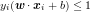
この条件では、データが線形分離不可能な場合に解が求まらない場合があります。
そこで、この条件を次のように緩和します。

 はスラック変数と呼ばれるもので、先ほどの条件をどの程度違反しているかを表します。
データがマージンの中に入ってしまったときは
はスラック変数と呼ばれるもので、先ほどの条件をどの程度違反しているかを表します。
データがマージンの中に入ってしまったときは 、
誤って分類してしまったときは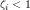となります。
、
誤って分類してしまったときは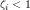となります。
ハードマージンSVMの目的関数にスラック変数をペナルティとして加えます。 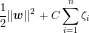 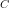はどの程度誤りを許すかを表します。 が大きいほど誤りに対して厳しく、ハードマージンSVMに近づきます。
ハードマージンSVMと同様に双対問題へ置き換えます。
ラグランジュの未定乗数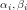を導入し、
 の最小化と置き換えます。
KKT条件から次の条件を満たす必要があります。
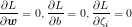
の最小化と置き換えます。
KKT条件から次の条件を満たす必要があります。
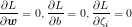
 これから
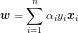
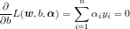
これから
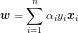
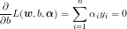
 が得られます。するとに関する項が打ち消し合って、結局ハードマージンSVMと同じ式が得られます。
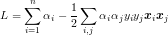
ただし、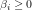と
が得られます。するとに関する項が打ち消し合って、結局ハードマージンSVMと同じ式が得られます。
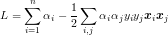
ただし、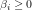と![\[\alpha_i+\beta_i=C\]](../../../../memo/algorithm/svm/87a5a812d07c312562e25fab869c0170.gif) から、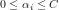という条件がつきます。
制約条件が違うだけなので、クリッピングの条件を変えるだけでハードマージンSVMと同じように解けます。
から、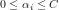という条件がつきます。
制約条件が違うだけなので、クリッピングの条件を変えるだけでハードマージンSVMと同じように解けます。
最後にサポートベクトルから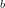の値を求めるわけですが、このベクトルの選び方が少し違います。
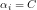のとき となるため、を満たしません。
このようなベクトルからはを直接求めることができないので、
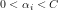となるようなベクトルを選ぶ必要があります。
となるため、を満たしません。
このようなベクトルからはを直接求めることができないので、
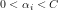となるようなベクトルを選ぶ必要があります。